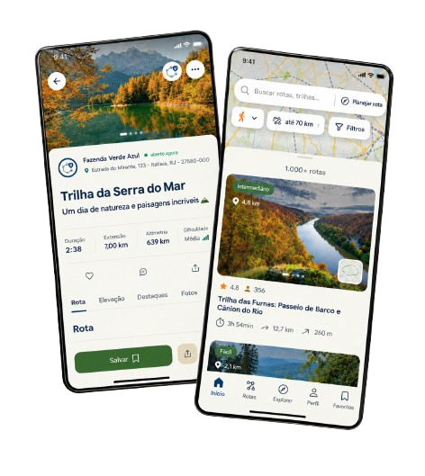

CHEGUE BEM. ESCOLHA O CAMINHO MAIS SEGURO.
Seu caminho, sua liberdade, Viaje com segurança.
Com conta gratuita, você pode encontrar, personalizar e navegar facilmente por aventuras ao ar livre sem fim.

Com conta gratuita, você pode encontrar, personalizar e navegar facilmente por aventuras ao ar livre sem fim.

 Ver todas as Noticias
Ver todas as Noticias